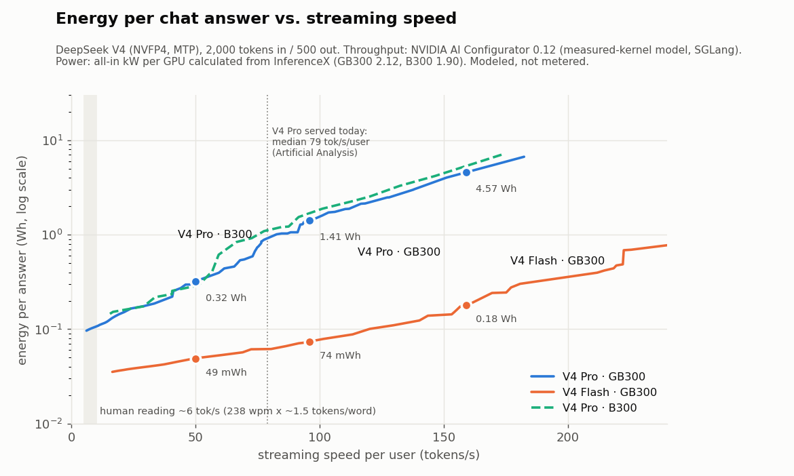
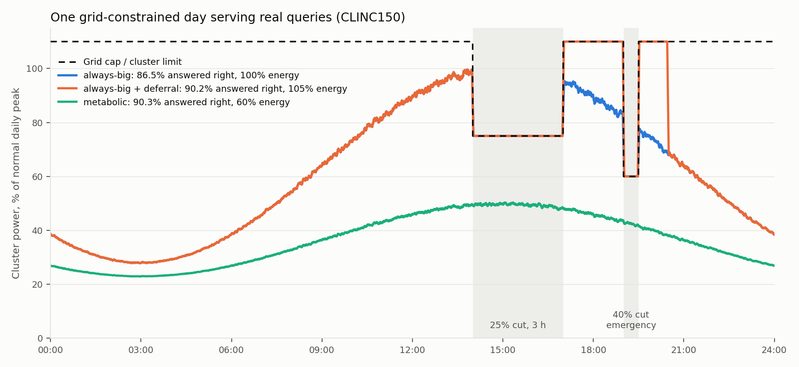
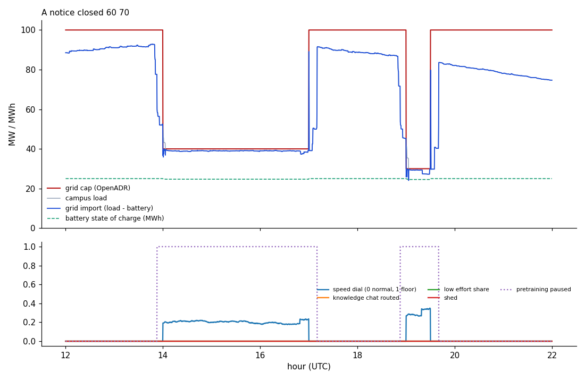
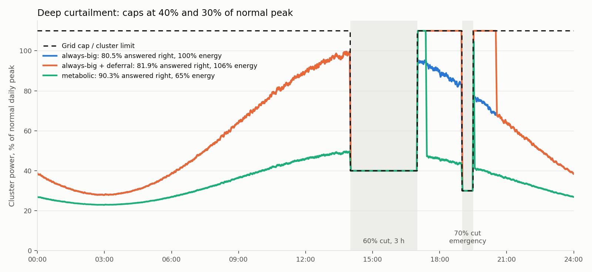
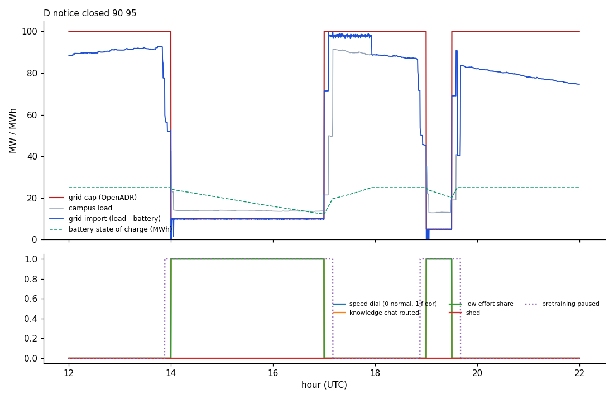
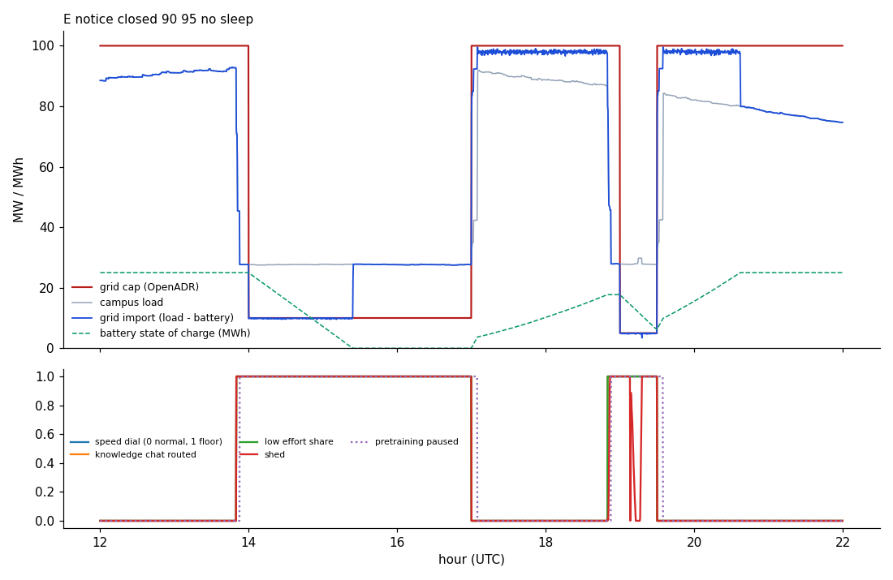
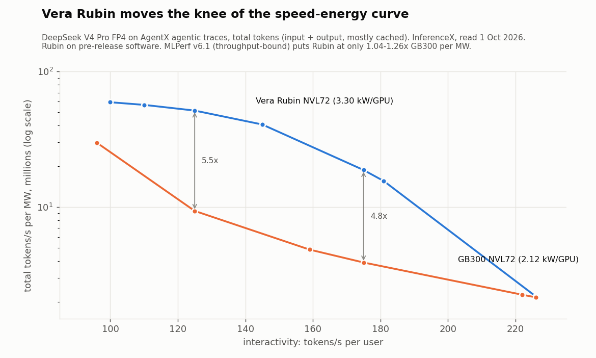
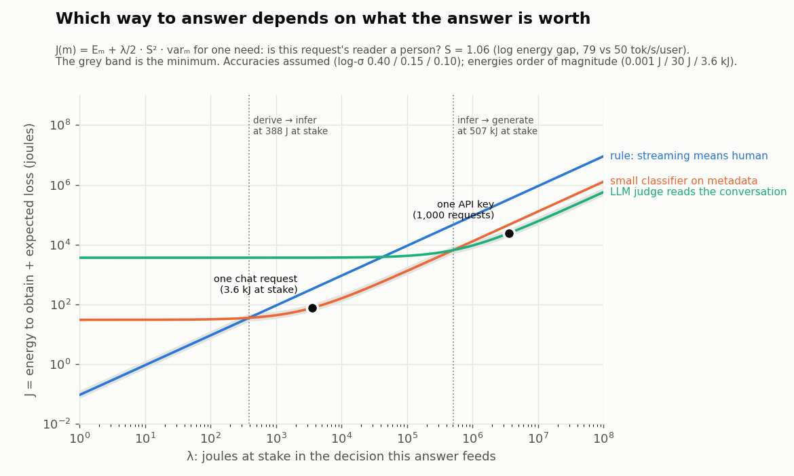

Metabolic Intelligence
A budget goes in. The best answer that budget can buy comes out. Designed for Klere (klere.ai): edge plus resource-optimized central, not uncapped hyperscale.
This page teaches the dual-scale class with pack charts and short Manim clips.
Claims stay ledger-safe with the study at /papers/mei/.
Soft-ref path: board_synth_claimed=false. Estimates are not package measured_j.
Chicken-spoilage Anwar results are internal only and are not published.
Evidence chips label each figure.
Catalog triad: Navigation (Mixture of Limits) · Commit (Notational Intelligence) · Economic Reality of Satiation. Fourth study: Energy budget / Metabolic Intelligence. Product home: klere.ai. Investor one-pager: /about/mei/.
How to read this page
- Dual scale. Same thesis at a coin-cell tag and at a budget-capped lean campus.
- Enzyme vs MLP. Recognition under MCU instruction budgets, not a smaller transformer.
- Grid levers. Ordered actuators that free megawatts with least service lost.
- J(m|q). Price the obtain zone. Open Model last. Stop when Value of Information is spent.
mei-diag-01 Budget-in → best-answer-out (dual scale)
Teaching diagram Unmetered
Look at both ends of the same class. On the left, the plant is a coin cell. On the right, the plant is a grid-following import cap. The middle box is the rule: state budget B, then take the best answer that budget can buy. Dedicated water, power, and hyperscale cooling plants are not required by design at these envelopes. That is a design consequence, not a liters-saved meter.
Manim clip plus static SVG. Soft-ref: board_synth_claimed=false. Study: §1–§2 and Appendix C.
mei-diag-02 J(m|q) obtain router
Calculation + looked-up Estimated
Watch the cascade left to right. Lookup and Formula close first when grammar covers the need. Solver settles when physics needs it. Model opens last. Guess is residual. The rule under Mixture of Limits is m* = argmin J(m|q). Ledger Wh/answer bands on this path are estimates, not board measured_j.
Lookup → Formula / Calculate → Solver → Model LAST → Guess m* = argmin_m J(m|q) = E_m + λ · ½ · S_q² · var_m(t)
Standing obtain rule. Study §4. Price the obtain zone, not only which LLM answers.
mei-tab-01 Digital enzyme vs int8 MLP (instruction counts)
Emulator-measured Pack MCU
Compare recognition cost under a matched Cortex-M4 decision setting. Enzymes with early exit take fewer instructions than a dense int8 MLP. On SmellNet sequential learning (50 foods, five groups, no revisit), enzymes keep accuracy across groups while the MLP collapses. Instruction counts are not a wattmeter. Do not upgrade them to board joules.
| Model (Cortex-M4 pack) | Instr / decision | Notes | Evidence |
|---|---|---|---|
| Enzyme families + early exit (12-feature pack row) | 1,723 | Matched decision setting vs MLP | Emulator (unicorn / pack mcu/) |
| int8 MLP (same setting) | 2,451 | Baseline dense leaf | Emulator |
| SmellNet sequential (50 foods, 5 groups, no revisit) | — | Enzymes 77.7% vs MLP 18.4% | Real dataset protocol |
Chicken-spoilage Anwar numbers stay internal (no licence). Study §5.
mei-tab-02 Tag metabolic schedule (~10 µW class)
Datasheet + schedule model
The heater is not always the dominant cost. On the metabolic schedule with T/RH wake and a 4 h cap, sleep current dominates. Total average power sits near 10 µW in the pack model. Capacity years are a model from CR2032 datasheet capacity, not shelf-measured years.
| Policy (BME690 + STM32U3) | Heater µW | Sleep µW | Total µW | CR2032 years (model) |
|---|---|---|---|---|
| fixed every 0.5 h | 15.00 | 6.93 | 21.93 | ~3.7 |
| fixed every 1 h | 7.50 | 6.93 | 14.43 | ~5.6 |
| fixed every 4 h | 1.88 | 6.93 | 8.81 | ~9.1 |
| metabolic + T/RH wake, cap 4 h | 2.99 | 6.93 | 9.92 | ~8.1 |
| metabolic + T/RH wake, cap 8 h | 2.26 | 6.93 | 9.19 | ~8.8 |
From pack tag_budget_2026_results.json. Study §6.
mei-chart-01 Energy vs speed (pack chart)
Curves / measured-kernel model Estimated
Speed-matching and Flash-first are test-time levers under a live budget. They are not a new pretrain. Wh/answer stays Estimated until Metered.

datacenter/curves/energy_vs_speed.png (AI Configurator curves × estimated all-in kW/GPU). Study §7.mei-chart-02 Grid day mechanism (pack chart)
Plant model Mechanism test
Cluster power tracks a simulated grid day under several policies. Use this with OpenADR/DSX protocol evidence. Do not treat the plant model as a field meter.

datacenter/grid_day.png. Study §8.mei-chart-03 Grid service scenario A (notice, closed loop)
Real protocol + plant model
Protocols (OpenADR 3.1 VTN, DSX Flex MQTT) are real. Campus watts are the plant model. With node sleep available, the closed scenario set shows zero time over cap in the pack headline.

datacenter/service/tests/grid_day_A_notice_closed_60_70.png.mei-chart-04 Stress day (pack chart)
Plant model
Stress day shows how levers stack when the grid asks harder. Still a plant model. Pair with scenario A and the D/E sleep contrast below.

datacenter/grid_day_stress.png.mei-chart-05 Scenario D vs E: 90–95% cut, sleep on/off
Real protocol + plant model
Same deep cut. Left (D) keeps node sleep available. Right (E) removes sleep. The contrast teaches why sleep is a first-class lever, not an afterthought.


Pack assets under datacenter/service/tests/. Do not sell “100% served through 90% cut” as a universal field result.
mei-chart-06 Vera Rubin vs GB300 (field peer curve)
External field / pack curve Estimated composite
This chart orients campus energy-per-answer talk against published peer hardware curves. It is an envelope actuator context chart, not an OpenIE board meter.

datacenter/curves/vera_rubin_vs_gb300.png. Cite InferenceX / MLPerf peers in the study; do not invent OpenIE measured_j.mei-chart-07 Consumer regime detection (synthesis)
Synthesis / schedule model
Consumer speed tiers feed the metabolic gateway. Regime detection tells which lever to pull first under a live budget. This is software-path evidence, not a GPU wattmeter.

synthesis/regime_consumer_detection.png. Study §4 and §10 Journey C.mei-diag-03 Grid lever order (least service lost per MW)
Real protocol demos Plant model
Pull levers left to right. Pause first. Then slow speed. Then route to a smaller model. Then lower effort. Then battery. Shed last. AEMA has no published protocol spec yet (1 Oct 2026 radar). Do not sell AEMA latency numbers.
OpenADR 3.1 + DSX Flex–shaped service. Manim motion for this figure is backlog. Study §8.
mei-map-01 Hardware dual-map
Operational map Unmetered
The class runs today on GPUs and MCUs. It points at neuromorphic, analog / in-memory, photonic, and reversible / adiabatic substrates next. Map status is not a meter reading.
| Leaf | Runs today (von Neumann) | Post–von Neumann path | Status in study |
|---|---|---|---|
| Digital enzyme | MCU / Cortex-M4 C | Content-addressable / sparse associative | Emulator-measured instructions |
| J(m|q) router | CPU / gateway service | N/A (software) | Math + ledger |
| Campus levers | GPU planners, Redfish, MQTT | Analog power fabrics (speculative) | Real protocols; plant model |
| Latent / EBM optional | GPU ViT / Lean | Analog DenseAM / memristor Hopfield | Cited peers; not OpenIE meters |
Teaching map from study Appendix B. Soft-ref path: board_synth_claimed=false.
Shipped Manim: mei-diag-01 dual scale, mei-diag-02 obtain router (mp4/webm/gif). Backlog: mei-diag-03 lever-order motion; enzyme vs MLP bar motion. Voice locks unchanged. Thesis video docs untouched and not committed.
Measurement note
No board package joules are claimed here. Evidence classes: real protocol / emulator / datasheet / curves / plant model. Read the study claim ledger (Appendix E) for proven pack vs roadmap vs estimate. Pack third-party notices: PACK_THIRD_PARTY_NOTICES.md.